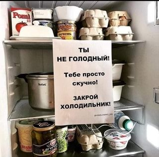

Думаете, что поесть?
Используйте ингредиенты, которые у вас уже есть, и не ходите в магазин.
Просто скажите нам, что у вас есть, и мы предложим вам разнообразные блюда
Вы можете загрузить фотографию своего холодильника или отметить ингредиенты в списке.
Поиск рецептов
Полезно
Здоровая пища тоже может быть вкусной
Мило
Порадуйте своих близких вкусной едой
Эм... Что ж
Давайте приготовим что-нибудь без огня...
Поиск по ингредиентам
Вы когда-нибудь оказывались в ситуации, когда в холодильнике остались только яйца, сыр и пара огурцов, а в магазин идти совсем не хочется? Не переживайте - просто отметьте галочками, что у вас есть.
Готовы начать? Тогда вперед, к кулинарным приключениям!
Перейти к поискуПоиск по фото
Даже в самые темные времена найдется надежда... И возможность еще быстрее и проще найти рецепт.
Сфотографировать холодильник и получить поборку рецептов - это к нам!
Перейти к поиску